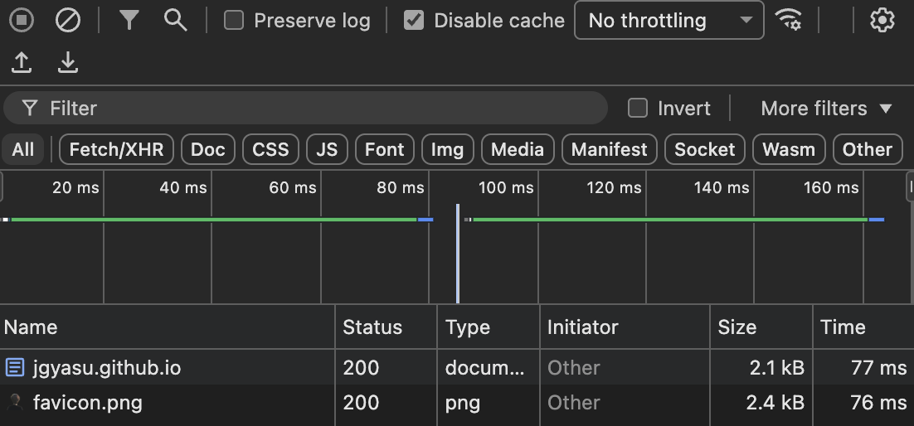

The Endless Pursuit of a Personal Website
Final, Final_1, Final_2, Final_3, …, Final_N?
Ever since I started to understand how internet works, I wanted to have my personal website. You may ask why? Well, I have no particular reasons, perhaps I just wanted to put myself out there?
When I was in middle school and I did not know how to code websites, I used to use tools like Wordpress and PortfolioBox. They always left me dissatisfied because of how clunky and bloated they felt. But using them made me form my own philosophy around website designs - I ended up knowing what I don’t like and it is very important to know what you don’t like!
After using countless frameworks, static website generators, and going crazy with plain HTML and CSS, I think I have finally reached the website nirvana.
I recently came across something called bearblog and I believe their design philosphy is very close to mine. You can use bearblog to create blogs but you don’t get the source code of your website. Now, me being me, I was fixated on having something which is hackable.
Fortunately, Jan Raasch has created a Hugo theme which has almost the same design as that of bearblog while still being hackable. A sane person probably wouldn’t understand the ridiculous amount of joy this brought me, but if you’ve ever searched for that one perfect tool for years, you’ll know exactly what I mean :)
This website does quite well on page speed too:

For the first time, it feels like the pursuit of my personal website might actually be over and this might finally be my Final_N.
P.S. I took the color scheme of this website from ansharora.in.